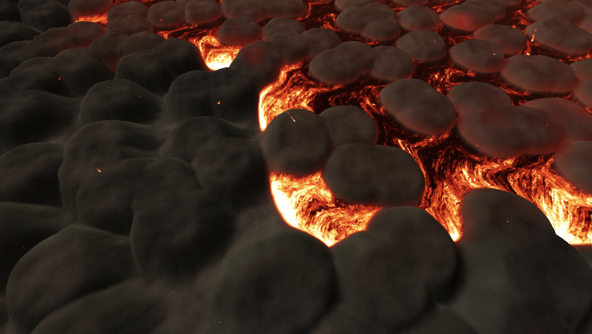

In our project, our main goal was to solve the following problem - having to model a viscous fluid (lava) as it traverses down our mountainous terrain. This consisted of a few main parts including modeling the volcano, particle rendering for lava, surface reconstruction, then finally texturing of these particles. We started from Project 4 and created a particle simulation using Smoothed-Particle Hydrodynamics (SPH). The volcano was generated from a heightmap where lighter colors generated to higher terrain. Marching cubes was used to create a surface from the SPH scalar field. Finally a texture was added to create a semi-realistic lava look.
The first step we did for our project was rendering the volcano we were going to use. We started with project 4 as a baseline where the cloth mesh can be modified to simulate the volcano. We found a heightmap online and by using the buildGrid method that was used for clothes in project 4, we were able to create a heightmap which would allow us to represent the height of the volcano. This is done through the use of stbi_load() with 1 set as the desired channel in order to tell the loader to output the image in a single channel grayscale format. This then allows us to extract the pixel value at each position in the image corresponding to our volcano grid, where a lighter grayscale value corresponds to a higher position on our volcano. After constructing our grid from the heightmap, we simply built a clothMesh from it, similar to homework 4, and then texture mapped a volcano texture onto our resulting mesh.
In order to render our lava, two things had to be done. Firstly, we needed to spawn a sea of lava particles above our volcano. Our build_lava function handles this by creating a sphere-like blob of randomly generated lava particles. We extracted the maximum height of the volcano to help us offset the lava particles to be above the volcano. After creating our blob, the second part of rendering the lava was in creating a mesh from these particles using the marching cubes algorithm. We decided on integrating libigl into our project to avoid having to implement this monster of an algorithm ourselves. The three most important inputs to the API are two eigen field matrices and one iso threshold value. The matrix inputs define the positions of our lava particles as well as a scalar value which the marching cubes algorithm uses to construct the mesh. More specifically, the scalar values are the relative densities at the given positions where we compute the density based on the poly6 kernel, and internally, marching cubes decides whether something is on the surface of our object based on these densities and the supplied iso value. The outputs of this API are an n x 3 matrix of 3D points that represent the vertex positions of our isosurface mesh as well as an m x 3 matrix of triangle indices where each row is a triangle defined by indices into our vertices matrix.
If we get ahead of our schedule, and get the bare bones implementation finished, our team is hoping to add more complexity to the mountain to make the system more realistic. We believe that this task would be very challenging, but also really rewarding if done correctly. This includes adding aspects such as the action of lava first spewing into the air rather than a natural downward motion, or the inclusion of objects which might be engulfed in the lava, among other ideas which we had.
In regards to aspirations that we have with illuminating the surrounding area, we believe aspirations can include accounting for the illumination that might occur as a result of lava, such as a darker global image due to ash and smoke, while also maintaining the illumination from the lava itself. Other aspirations include use different rock formations to represent our volcano, where the lava colliding will take the shape of the different formations on the volcano, different to a strictly smooth surface.
We then had to add collision with the volcano, as currently our particles would go straight through. To do this, we already had a function that extracted height from the heightmap. For each particle we checked if its position was below this height and if it was we moved it to the top. This worked for basically stopping the particle once it hit the volcano but obviously a fluid doesn’t stop when it hits something it flows downwards. To implement this we found an estimate of the gradient wherever the particle collided. We did this by basically finding the rough slope using a small change in X and change in Y, getting the heights at those values and then finding the slope. We then applied it to the particle's velocity so it would follow the slope downwards by removing the component of the velocity that was parallel to the normal (essentially projecting it onto the tangent plane). This allowed a particle to flow down the slope like seem below.
Finally to simulate lava flowing continuously out of the volcano, at certain time steps we would generate more lava in the starting point to make it seem endless.
The goal of our texturing was to simulate the fluid flow in terms of the material properties of the lava, which includes highlighting the emissive properties of the lava and the molten form of the lava as it flows down the volcano’s exterior. The way we went about this is we looked to integrate a real-time lava shader, which was inspired by an existing lava shader implementation that we found on Shader Toy.
This implementation consisted of multiple parts, where we started with having a vertex and a fragment shader. The fragment shader will have the effect of providing a more realistic view of our lava as seen how it is overlaid on the , emphasizing the color gradient, temperature-based color calculations, and also the emissive properties of the lava.
Diving deeper into the temperature-based color calculations, some specific use cases of this quality was to simulate a physical body. Through blackbody radiation, color was able to be simulated through an effect that represents how the lava would look at different timesteps given the amount of radiation that it absorbs and its corresponding “glow” based on its temperature.
Some issues that we faced throughout the creation and implementation of the lava shader is the effect that the lava had on the view of the volcano map itself, which became significantly darker due to issues that we started to face due to the lighting. Due to this, we modified our lighting function for the volcano to use Blinn-Phong lighting, taking into the ambient, specular, and diffuse lighting characteristics in regards to the volcano.